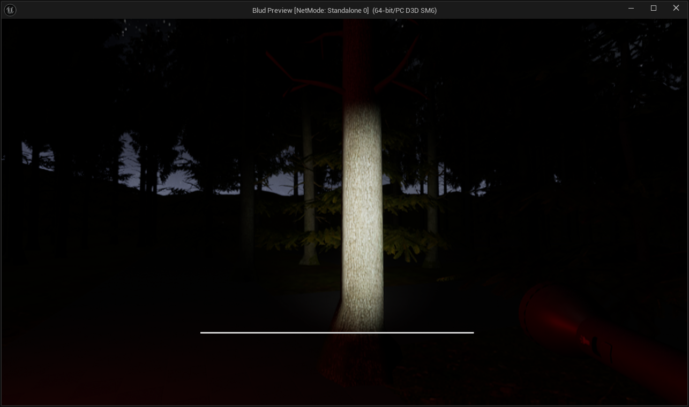

🔍 Мета дослідження
Дослідити можливості Unreal Engine 5 для створення атмосферної гри, заснованої на елементах українського фольклору.
📚 Актуальність теми
Сучасні ігри дедалі частіше звертаються до національної культурної спадщини. Український фольклор має великий потенціал для інтерпретації у візуальних та інтерактивних медіа. Створення гри на основі таких сюжетів сприяє збереженню і популяризації традицій.
📌 Основні завдання
- Розробити ігрову логіку для психологічного хорору
- Інтегрувати NPC та поведінкові скрипти
- Реалізувати систему підказок через записки
- Застосувати стратегію Release Flow у Git
- Забезпечити адаптивність сайту та валідний HTML/CSS код
⚙️ Методологія дослідження
Проєкт базується на емпіричному підході з використанням рушія Unreal Engine 5. Були застосовані техніки level design'у, налаштування штучного інтелекту для NPC, використання механік виживання, а також реалізовано скриптовані сцени та звукові ефекти. Для вебчастини — адаптивна верстка без використання фреймворків.
🎯 Очікувані результати
Функціональний прототип гри з реалістичним візуальним та звуковим супроводом, що демонструє глибину фольклорного контексту.
🖼 Візуалізація
📄 Повний текст роботи
Завантажити повну версію бакалаврської роботи можна за посиланням:
Скачати PDF📬 Контактна інформація
Студент: Мірошниченко Богдан
Університет: СумДУ
Telegram: @mistg4